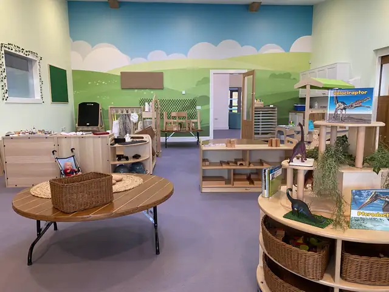
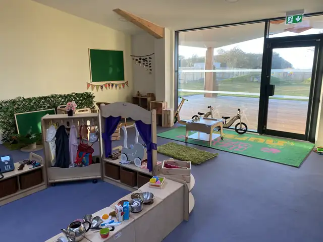
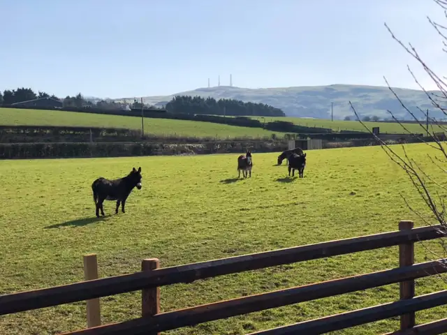

Depute manager
Caroline
- HNC Early Education and Childcare
- BA Childhood Practice
Private day nursery next to Heads of Ayr Farm Park
A nursery near Alloway, Ayr, for children aged 2 to 5. Open 8am to 6pm, Monday to Friday, 51 weeks a year.
Phone us on 01292 388456.

 CarolineDepute manager
CarolineDepute manager ChelseaSenior team manager
ChelseaSenior team manager FernRoom lead
FernRoom leadWe close on Friday 25 December 2026 and reopen on Tuesday 5 January 2027. Dates can differ for each room, so check our closure dates.
“At Heads of Ayr Nursery your child is our number one priority. We encourage open communication between our team and parents and guardians.”
Kerri MillerNursery manager, writing with the Rankin family, nursery owners
From the welcome letter in our parent handbook. Meet Kerri and our managers
Your child's key worker
Every child here has a key worker. This is how it works.
Your child's key worker is responsible for their care and wellbeing while they are with us.
Share what your child needs, likes or finds hard. Their key worker will use it.
They notice what your child can do and plan the next steps with you.
You get regular reports, updates on our Learning Journal app and parents' meetings.
“The staff are so welcoming and settled both of our nerves those first few weeks with care and kindness.”
Our team
21 people work here: managers, room leads, early years practitioners, our office and our chef.
Depute manager

Senior team manager

Early years practitioner, room lead

Early years practitioner, room lead
Plus Lisa, Caitlin, Nadia, Aillie, Nicola, Skye, our chef Lindsey and 10 others.
Phone 01292 388456 and ask for the right person.

Our office. Rochelle is our admin co-ordinator.

Lindsey, our chef, plans and cooks every meal.

Our nursery
Our purpose-built nursery opened in March 2021. Children can go out to the garden from both rooms.
Ages 2 to 3
A bright, open room with a separate quiet room for books, naps and cuddles.
Ages 3 to 5
Areas for role play, water play, mark-making and building. A place to make first friendships.
Both rooms
Treehouses, tunnels, a mud kitchen and a mini stream. Children also visit the farm park next door.



Inspected on 30 March 2022. Grades published on 5 August 2022.
Grades go from 1 (unsatisfactory) to 6 (excellent).
Fees from our website and parent handbook. Phone to check current fees.
Phone or email to book a visit and see the nursery for yourself.
You meet the staff, look round and finish the paperwork. Your child stays for a short time.
We work with you to build up to your child's full session. It usually takes a few sessions.
Your child is given a key worker who looks after their care and wellbeing.
Christmas closure and other dates.
A sample week from our 10-week menu.
Phone to tell us. Check when they can come back.
Paid in advance. Bank transfer is best.
Heads of Ayr Nursery
Dunure Road
Alloway by Ayr
South Ayrshire
KA7 4LD
We are next to Heads of Ayr Farm Park, with our own car park and driveway.